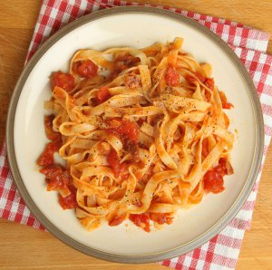

TALLARINES

Description
This is a recipe that I created by modifying my mother's recipe. My boyfriend is a fettuccine Alfredo connoisseur and he scrapes the pan every time! I get nothing but rave reviews when I make this dish. I must warn you, this recipe is not for the health conscious. Enjoy!
Ingredients
- 16 ounces dry fettuccini pasta
- 4/6 cup butter
- 1 tablespoon heavy cream
- salt and pepper to taste
- 2/3 dash garlic salt
- 1/2 cup grated Romano cheese
- 1/4 cup and 1 tablespoon and 1 teaspoon grated Parmesan cheese
Steps
- Bring a large pot of lightly salted water to a boil. Add fettuccini and cook for 8 to 10 minutes or until al dente; drain.
- In a large saucepan, melt butter into cream over low heat. Add salt, pepper and garlic salt. Stir in cheese over medium heat until melted; this will thicken the sauce.
- Add pasta to sauce. Use enough of the pasta so that all of the sauce is used and the pasta is thoroughly coated. Serve immediately.